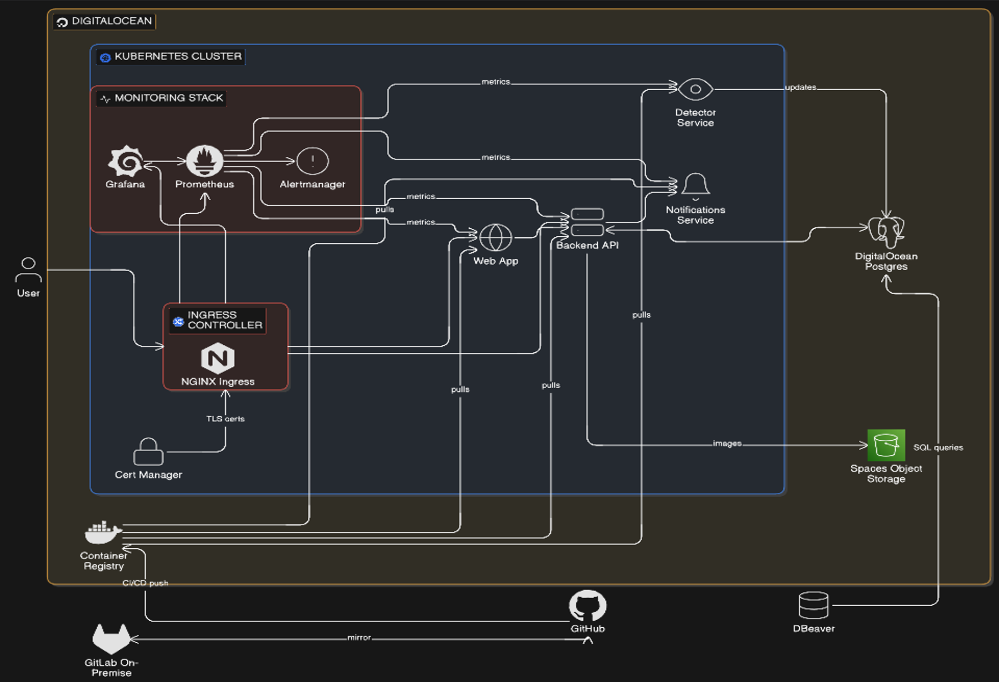

ParkEasy (CloPro1)


 ← Back to Projects
← Back to Projects
Overview
ParkEasy is a smart parking marketplace built for Luxembourg and other European cities. It combines a private parking marketplace with an AI-powered public parking detection system to reduce congestion, save time, and improve urban mobility.
Objectives
• Build a hybrid platform for public + private parking management.
• Use YOLOv8 + OpenCV to detect free spots from camera feeds.
• Deliver a Node.js backend + React frontend with real-time updates.
• Deploy on DigitalOcean Kubernetes with monitoring and autoscaling.
Problem Statement
Current parking apps focus on payments or static reservations. There is no unified system that combines AI-based live detection of public availability with peer-to-peer private parking listings. ParkEasy bridges that gap.
Architecture
Dual-system design: Smart Detection (AI pods + APIs) and Marketplace (accounts, listings, bookings, payments) connected through a Kubernetes cluster.
Tech Stack
Detection: Python, YOLOv8, OpenCV
Backend: Node.js (Fastify/Express), WebSockets
Frontend: React (Vite/CRA)
Data: PostgreSQL, optional Redis/RabbitMQ
Cloud: DigitalOcean DOKS + Managed PostgreSQL
Observability: Prometheus + Grafana
Kubernetes Design
Detector pods run per camera feed and scale with HPA. Backend API, frontend, broker, and monitoring each run in dedicated deployments behind an Ingress controller. ConfigMaps and Secrets manage keys and camera configs.
AI Detection Workflow
1) Capture camera frames → 2) YOLOv8 detects vehicles → 3) Occupancy computed by polygon overlap → 4) Detector pod sends results → 5) Backend updates DB → 6) Frontend shows real-time availability.
Marketplace Workflow
Owners list spaces with pricing and schedules. Drivers search by time/location, reserve, and pay. Availability updates in real time and usage analytics are generated for owners.
Monitoring & Observability
Prometheus collects CPU/memory, API latency, active users, and detection accuracy. Grafana dashboards visualize uptime, camera performance, occupancy rates by zone, and booking metrics.
Deliverables
• Kubernetes manifests (YAML)
• Source code (GitHub repository)
• Grafana dashboard screenshots
• 500-word reflection (co-authored with Kim Nguyen)
• PDF project report and presentation assets